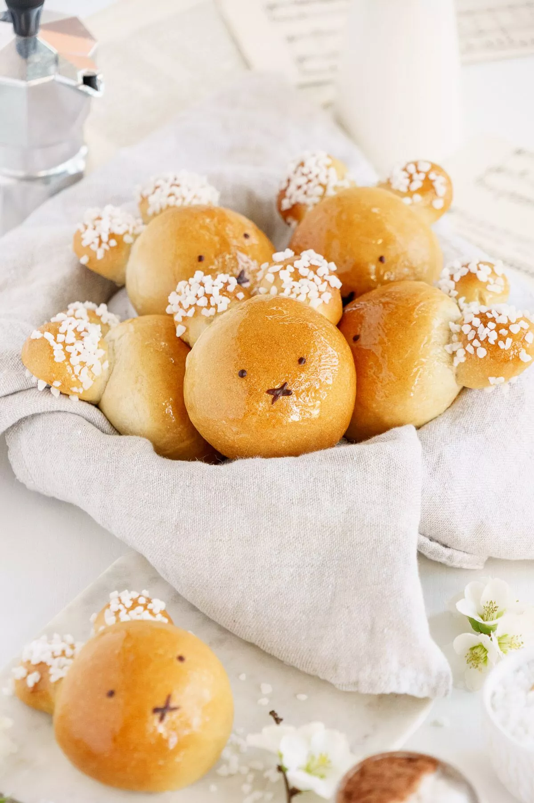

Odin Recipes
Easter Vegan Brioche Bunnies

Description
Vegan Brioche Bunnies are the perfect addition to any Easter brunch table! These step-by-step instructions will teach you how to make bunny-shaped brioche bread from dairy-free and plant-based ingredients.
Ingredients
- 200 grams almond milk
- 1 1/2 teaspoon instant dry yeast
- 300 grams strong white bread flour
- 40 grams extra-virgin olive oil
- 50 grams brown granulated sugar
- 1/2 teaspoon vanilla extract
- 1/2 teaspoon salt
- zest of 1/2 orange
- 4 tablespoons almond milk
Decoration
- 80 g water
- 80g brown sugar
- 2 tablespoon pearl sugar
- 45g dark chocolate
Instructions step by step
- Mix the active dry yeast in slightly warm milk and stir well. Let it rest for a few minutes.
- If kneading by hand: In the meantime, add the flour, sugar, salt, vanilla, orange zest, and olive oil to a bowl and mix with a spoon. Add the milk, mix with a spoon, then start kneading the dough by hand for at least 10 minutes until it is nice and smooth. The dough should be pretty sticky to begin with. If it feels a bit too dry, add a touch more milk. Avoid adding more flour, and if you need help handling the sticky dough, use some extra olive oil on your hands.
- Shape the dough into a smooth ball, place it back into a clean bowl greased with a bit of oil, and cover it with a slightly damp tea towel or a lid (this will prevent the dough from drying out). Place the dough in a warm place (I usually place it in the microwave or the oven with the light bulb turned on) and wait for it to double in size. It should take at least 1 hour to 1 hour and a half.
- Take the dough out of the bowl and divide it into 8 equal-sized pieces. You will use 6 pieces to make the bunny head and 2 pieces to make the ears. Shape 6 pieces into smooth balls and place them on a baking tray covered with parchment paper. Make sure to space the balls well, as they will grow in size.
- Divide the last 2 balls into 3 smaller balls each, cut them in half to form the ears, and place them on each dough ball.
- Cover again with the tea towel and leave it in a warm place to rest for 30-40 minutes. The dough should increase by 50%.
- In the meantime, preheat the oven to 340 F (170 C).
- Brush the bunnies with almond milk. Bake in the oven for 12-14 minutes or until the top is golden. If the bunnies are browning too quickly, you can cover them with aluminum foil.
- While the bunnies are baking, make the sugar syrup. Add the sugar and water to a pot on medium-high heat and bring to a boil. Reduce the heat and let it simmer for a few minutes until you reach a syrup consistency.
- Remove from the oven (note 6). While the brioche bunnies are still warm, brush the top with the sugar syrup. Decorate the ears with pearl sugar. Melt the chocolate. Once they've cooled down a bit, decorate the bunnies with eyes and nose with the help of a toothpick.
- Serve the bunnies warm or at room temperature. Store the brioche bunnies in an airtight container at room temperature for up to 3 days or in the freezer for up to 1 month. To serve the brioche bunnies, reheat for a few minutes in the oven.
Notes
- Please try to use a scale and metric measurements. I included cups measurements, but the dough is quite sensitive, and it needs precise quantities of liquid and flour.
- Remember that each type of flour absorbs liquids slightly differently. All-purpose flour generally has less protein content, so you might need less liquid.
- This dough should be pretty sticky to begin with, but the more you work it, the more elastic it will become.
- This brioche is delicious made with extra-virgin olive oil, but I sometimes use a nutty oil to give it more depth of flavor.
- You can omit the orange zest, but you won’t believe the difference it makes. It will make your home smell incredible for days! And the brioche will taste divine!
- Do not try to remove the bunnies from the baking tray straight away. They are very soft. Let them cool for at least 10 minutes before moving them on a cooling rack.